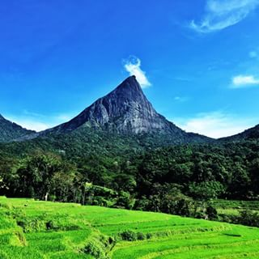

MEEMURE VILLAGE CAMP offers guests an opportunity to experience what it is like to live in the ancient isolated village of Meemure. The village is situated deep in the Knuckles Wilderness, where the local people have maintained their traditional and cultural attitudes towards the forest’s existence. They rely heavily on the forest for their survival and gain as much as 63% of their total income from the forest resources
Meemure - Experiance the luxury Camping & flavor of the Real Country Life. |
Getting there. |
 |
 |
One of the most unbelievable aspects of the remote village of Meemure is the fact that it is completely isolated and has no forms of communication whatsoever. There are no telephone lines – even to the nearest city of Hunnasgiriya, some 29km |
One of the most unbelievable aspects of the remote village of Meemure is the fact that it is completely isolated and has no forms of communication whatsoever. There are no telephone lines – even to the nearest city of Hunnasgiriya, some 29km |